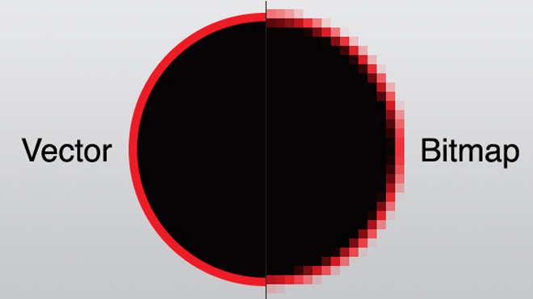

Compressie is kort gezegd eigenlijk gewoon het verkleinen van bestanden. Dit doe je bijvoorbeeld als je presentatie anders niet meer op je usb stick past, of als je via Whatsapp een foto stuurt. Je hebt twee verschillende soort compressie: lossy compression en lossless compression. Vertaalt is dit compressie waar er kwaliteit verloren gaat, en compressie waar dit niet zo is. Dit kun je zien als je inzoemt op een Whatsapp foto, de kwaliteit is prima maar de originele foto is wel mooier. Whatsapp maakt dus gebruikt van lossy compression. Het voordeel hiervan is dat de foto veel minder opslag inneemt en dat het Whatsapp minder moeite en elektriciteit kost om de foto te versturen. Maar eerst: wat voor verschillende soorten bestanden heb je eigenlijk? We gaan het hebben over drie verschillende vormen:
Deze vorm van opslaan en versturen van afbeeldingen wordt gebruikt bij complexere afbeeldingen, en is wat je zelf waarschijnlijk het vaakste gebruikt bij afbeeldingen. Bij Bitmap bestaat een afbeelding uit allemaal kleine pixels die verschillende kleuren hebben. Als je inzoemt neemt de kwaliteit van de foto af en wordt hij minder scherp (letterlijk 'blokkerig'), dat zijn de pixels die je ziet. 
Met vector maak je geen gebruik van pixels. Je maakt gebruik van berekeningen en eerder een soort beschrijving van de afbeelding. Het bestand bestaat dus uit beschrijvingen als 'rechthoek 3,5: geel' (een rechthoek van 3 bij 5 met de kleur geel). Zo kan vector dus alleen vormen vastleggen en geen complexe afbeeldingen zoals foto's. Voor bestanden als reclames of tekst is het natuurlijk wel erg handig, want doordat Vector geen gebruik maakt van pixels daalt de kwaliteit dus ook niet als je het bestand inzoomt of juist vergroot voor bijvoorbeeld een snelwegreclame die alleen uit tekst en vormen bestaat.
Geluid is trillingen in de lucht die je oren opvangen en je hersenen verwerken. Iets heel anders dus dan afbeeldingen. Geluid kan worden omgezet naar een elektronisch signaal door middel van een microfoon. Een computer kan dat signaal dan weer omzetten naar digitale waarden. Dit proces heet samplen. Tijdens het samplen wordt op een vast moment de sterkte van het geluid gemeten, dat is te zien op de grafiek hiernaast. Als dit opgeslagen geluid vervolgens weer wordt afgespeeld worden deze waardes weer omgezet naar een elektrisch signaal wat door bijvoorbeeld een speaker weer in luchttrillingen kan worden omgezet. Hoe meer samples je neemt van een geluid, hoe gedetaileerder het geluid wordt en hoe meer het lijkt op het origineel opgenomen geluid. Hoe veel samples er per seconden opgenomen worden heet dan weer de sample rate genoemd. Als je een cd besluiterd is de sample rate zo'n 44100.
Als je muziek wilt streamen in de oorspronkelijk opgenomen kwaliteit, dan kost dat heel erg veel data. Dat is jammer voor je databundel en dat zouden de servers van je streamingsdienst niet volhouden. Door middel van compressie wordt hierdoor de bestandsgrootte van je muziek verminderd, bij cd's gebeurt dit in veel mindere mate aangezien er bij een cd niks gestreamed hoeft te worden en het bestand gewoon fysiek op de cd zelf staat. Wij mensen kunnen maar een gelimiteerd bereik van toonhoogtes horen. Gemiddeld tot zo'n 20 KHz. Bij compressie wordt vaak gebruik gemaakt van MP3, in dat geval worden toonhoogtes die hoger zijn dan 16 KHz weggelaten als er veel geluid op hetzelfde moment is. Niet alleen de sample rate is van belang als het om geluidskwaliteit gaat, ook de bitrate is van belang. Deze krijg je door het aantal bits die gebruikt worden om de sample rate op te slaan keer keer de sample rate te doen. De bitrate wordt uitgedrukt in Kbps (kilobits per seconde). Aangezien muziek dus ongeveer een sample rate van 44100 en gemiddeld 32 gebruikt om de sample rate op te slaan, is de gemiddelde bitrate van muziek 1441,2 kpbs. Dit getal kan je sterk verkleinen zonder echt verschil te horen, alleen een getraind oor kan een verschil horen als de bitrate wordt teruggebracht naar 256 kbps. Dat is natuurlijk nogal een verschil met de oorspronkelijke kbps en zo kan muziek dus makkelijker worden gestreamed zonder dat je hier echt veel van merkt. In de grafiek hiernaast kan je goed zien wat compressie doet met geluid, de hoogtes en laagtes van het geluid worden afgezwakt en er zit minder verschil tussen de klanken.


 Foto's kan je goed kleiner maken door middel van compressie. Compressie wordt veel gebruikt in de digitale wereld. Wat een applicatie doet is flink inzoemen op de foto, en kijken naar de kleuren van de pixels.
Pixels die bij elkaar in de buurt staan en een aardig overeenkomende kleur hebben krijgen dezelfde kleur pixel, waardoor er minder verschillende kleuren opgeslagen/verstuurd hoeven te te worden. Hierdoor wordt de afbeelding minder mooi en minder rijk aan kleuren, de resolutie (de scherpte van de afbeelding) daalt dus. Dit is dus lossy compression.
Op de twee foto's hiernaast zie je een foto die ik heb gemaakt op vakantie in Helsinki. Links is de foto die ik gemaakt heb, en rechts is dezelfde foto maar dan nadat de foto vestuurd is via Whatsapp.
Kan je verschil zien in de twee foto's? Misschien niet, omdat ze niet zo groot zijn, of alleen als je zoomt. Als je echter heel erg zoomt, kan je het effect van de compressie pas echt goed zien.
Dat zie je onder de twee plaatjes, deze twee afbeeldingen zijn erg ingezoomt op de koepel van de Botanische Tuin, zo zie je dat Whatsapp het aantal verschillende pixels en kleuren flink heeft verminderd en dat de resolutie van de afbeelding een stuk lager is dan voorheen.
Als je dus een super mooie foto hebt gemaakt en je wilt graag alle details behouden, dan is het misschien een minder goed plan om hem via Whatsapp te versturen. Gelukkig is het verschil meestal niet zo erg zichtbaar, en zal het je bij de meeste foto's niet echt opvallen dat de kwaliteit net wat lager is.
Dan heb je ook nog lossless compression. Dit is iets minder ingewikkeld. Je bestand wordt dan verkleind door informatie van het bestand efficiënter op te slaan. Als 5 pixels allemaal dezelfde waarde van 52 hebben, dan wordt dit standaard opgeslagen als (52, 52, 52, 52, 52). Dit wordt dan bijvoorbeeld (5, 52) gemaakt wat natuurlijk minder data is om op te slaan.
De verkleining van de bestandsgrootte is echter wel minder bij lossless compression dan bij lossy compression, maar je bestand blijft wel qua uiterlijk onaangetast en je kan de compressie ook nog ongedaan maken, wat bij lossy compression niet kan omdat de oorspronkelijke data dan verloren is gegaan.
Foto's kan je goed kleiner maken door middel van compressie. Compressie wordt veel gebruikt in de digitale wereld. Wat een applicatie doet is flink inzoemen op de foto, en kijken naar de kleuren van de pixels.
Pixels die bij elkaar in de buurt staan en een aardig overeenkomende kleur hebben krijgen dezelfde kleur pixel, waardoor er minder verschillende kleuren opgeslagen/verstuurd hoeven te te worden. Hierdoor wordt de afbeelding minder mooi en minder rijk aan kleuren, de resolutie (de scherpte van de afbeelding) daalt dus. Dit is dus lossy compression.
Op de twee foto's hiernaast zie je een foto die ik heb gemaakt op vakantie in Helsinki. Links is de foto die ik gemaakt heb, en rechts is dezelfde foto maar dan nadat de foto vestuurd is via Whatsapp.
Kan je verschil zien in de twee foto's? Misschien niet, omdat ze niet zo groot zijn, of alleen als je zoomt. Als je echter heel erg zoomt, kan je het effect van de compressie pas echt goed zien.
Dat zie je onder de twee plaatjes, deze twee afbeeldingen zijn erg ingezoomt op de koepel van de Botanische Tuin, zo zie je dat Whatsapp het aantal verschillende pixels en kleuren flink heeft verminderd en dat de resolutie van de afbeelding een stuk lager is dan voorheen.
Als je dus een super mooie foto hebt gemaakt en je wilt graag alle details behouden, dan is het misschien een minder goed plan om hem via Whatsapp te versturen. Gelukkig is het verschil meestal niet zo erg zichtbaar, en zal het je bij de meeste foto's niet echt opvallen dat de kwaliteit net wat lager is.
Dan heb je ook nog lossless compression. Dit is iets minder ingewikkeld. Je bestand wordt dan verkleind door informatie van het bestand efficiënter op te slaan. Als 5 pixels allemaal dezelfde waarde van 52 hebben, dan wordt dit standaard opgeslagen als (52, 52, 52, 52, 52). Dit wordt dan bijvoorbeeld (5, 52) gemaakt wat natuurlijk minder data is om op te slaan.
De verkleining van de bestandsgrootte is echter wel minder bij lossless compression dan bij lossy compression, maar je bestand blijft wel qua uiterlijk onaangetast en je kan de compressie ook nog ongedaan maken, wat bij lossy compression niet kan omdat de oorspronkelijke data dan verloren is gegaan.